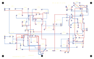

HI-008 · Reverb harness · 26 November 2026
Reverb pot connector placement
The revised JR4 candidate has zero KiCad violations and zero open connections. The source board, schematic and circuit remain unchanged. This proposal moves the removable pot connection to the lower board edge while retaining its three signal assignments.
What changed
The proposed Molex 430450402 header mates with 430250400. Place pad 1 at \((73,90.5)\,\mathrm{mm}\), rotated \(180^\circ\), on the existing \(160\times100\,\mathrm{mm}\) Reverb board. Cavity 1 remains WET_TOP, 2 WET_W and 3 ground; cavity 4 stays unassigned.
Replace eight original segments with twelve segments and two vias. Use \(0.6\,\mathrm{mm}\) on both complete wet-control nets and the new ground branch; use \(0.8\,\mathrm{mm}\) via diameter and \(0.4\,\mathrm{mm}\) drill to meet the existing project minima. New routes use horizontal, vertical and 45-degree segments. Move two labels clear of the connector. The conditional width/thickness calculation is in CU-001; full current qualification remains open.
Existing WET_TOP and WET_W segments change width only. The candidate gains a 35 µm nominal outer-copper stackup and a 0.6 mm wet-net rule; other footprints, copper, board data, mount holes and existing rules are preserved. The checker compares the connected terminal map with the current circuit. The additional unconnected cavity still requires matching schematic metadata before adoption.

Space that mechanical design must reserve
| Feature | Board-coordinate result | Meaning |
|---|---|---|
| Locator peg | \((71.5,94.82)\,\mathrm{mm}\) | 5.18 mm inside the lower edge; within the nominal 10.16 mm mating-edge rule. |
| Header front | \(y=99.42\,\mathrm{mm}\) | Header body remains just inside the 100 mm board edge. |
| Mated wire-exit face | \(y=107.07\,\mathrm{mm}\) | Plug extends 7.07 mm past the board. |
| First restraint, straight-exit assumption | \(y\ge119.77\,\mathrm{mm}\) | Leave the nominal 12.70 mm relaxed wire section before a tie, twist or forced bend. |
| Mated height | 10.81 mm; latching callout 11.00 mm | Manufacturer nominal dimensions, not finger or withdrawal clearance. |
Coordinates start at the board's upper-left corner, viewed from the component side; positive \(y\) points toward the plug exit. Using the HI-004 local wire-exit datum:
\[y_{\mathrm{exit}}=90.5-(-16.57)=107.07\,\mathrm{mm}\]
\[y_{\mathrm{restraint}}=107.07+12.70=119.77\,\mathrm{mm}\]
Thus the axial reservation beyond the board edge is \(19.77\,\mathrm{mm}\). It is not a complete three-dimensional keepout: wire spread, bend radius, latch finger space and withdrawal stroke remain unknown. Consume the mechanical interface when placing the populated board; do not substitute the footprint courtyard.
Routing and rejected trial
The first trial had 19 DRC findings: copper crossings/shorts, clearance and via-size violations, and silkscreen conflicts. It was rejected. The revised routing crosses the existing ground and negative-supply paths on the other copper layer, moves the vias beyond those paths, and keeps the original rules. The header moves inward by 1.5 mm.
Relative to the source, total WET_TOP copper length increases by 31.156854 mm, WET_W decreases by 4.134416 mm, and ground increases by 6.703961 mm. These are net totals, not wire lengths or an electrical performance claim. Capacitance, return geometry and the actual pot cable still need a loading comparison before release.
The draft audit initially treated KiCad's circle-drill enumeration as zero. Inspection showed the native enum is one; the checker now uses KiCad's named circle constant. The footprint holes did not change to make that check pass.
Evidence and next work
- Source, geometry and DRC checks; native DRC receipt; rejected-trial summary.
- Editable candidate board; placement and route inputs.
- Run the candidate factory, then the independent checker, with KiCad Python. The checker reruns DRC and records hashes.
- Confirm current connector drawing tolerances, cavity viewing direction, selected wire/contact/crimp combination and China purchase route.
- Compare added trace/cable loading, complete the matching four-cavity schematic change, and check the populated assembly before native adoption.
- Keep chassis mounts independent of removable rear wood; full drill-body/bit access remains pending.
No active circuit or native board is changed. No assembled fit, connector insulation, all-path current capacity or manufacturing release is approved by this candidate.
Sources and vocabulary
HI-004 mating geometry and manufacturer drawings; HI-005 relaxed-wire requirement and planning assumption; connector identity and interface.
- Cavity
- A numbered contact position in a connector.
- Datum
- The reference point or surface used for dimensions.
- Via
- A plated hole that connects copper layers.
- DRC
- KiCad's design-rule check for specified geometric and connection rules.
- Courtyard
- A footprint boundary for component placement; it does not include complete plug or hand access.
- Restraint
- A tie or support that fixes a wire's position.
- Native adoption
- Integration into the project's active schematic and board files.
- Parasitic capacitance
- Unintended electrical coupling between conductors.